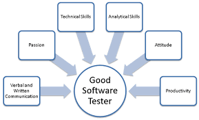
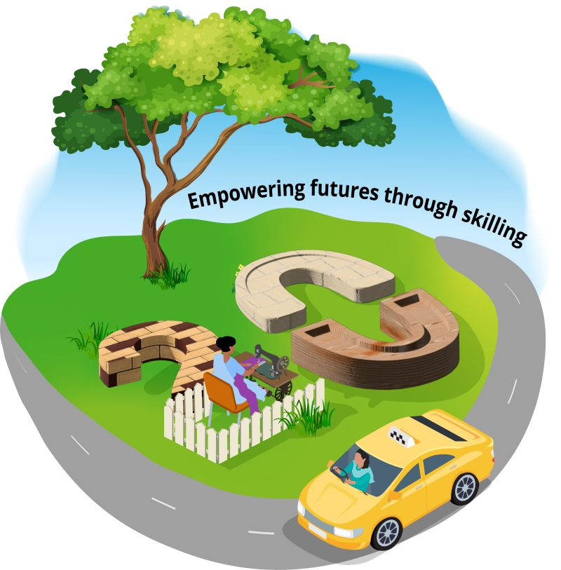

Manual testing & Automation testing

Skills that I have.

Enhancing my skills by upskilling.
Manual testing , Knowledge on
SDLC, STLC , functional testing ,
non functional testing, agile
methodology and bug life cycle.
Good in writing, executing
testcases and bug reports.
Have understanding of oops
concepts, java.
Understanding of opensource
test automation framework
named TestNG and Junit.
Good understanding of static
testing, dynamic testing and
different levels of testing.
.